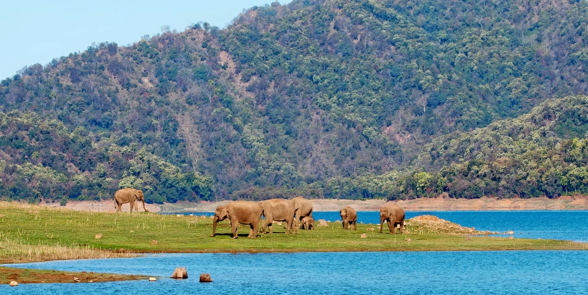

Shimala
Shimla also known as Simla.It is the capital and the largest city of the Northern Indian state of Himachal Pradesh.Evergreen forests, rolling valleys, breathtaking lakes, pleasant climate, and colonial ambiance, all come together to lend this hill station a charm of its own. With a varied range of attractions – natural splendors as well as man-made wonders – the place truly lives up to its reputation. But there’s a downside to it.There is many trekking places where you enjoy with family.Most famous tekking place is Kasauli.Kasauli trek is most attractive place of this tour &in this tour we 3 days spend there.
Kullu-Manali
A trip to Kullu Manali is the medicine for fatigued minds and tired souls. Nature has blessed them generously, and yet, one is different from the kind of experiences they offer. Kullu is called the “land of the gods”, and quite aptly so.Both Kullu and Manali, top tourist destinations of Himachal Pradesh, seem to outdo the other in their scenic magnificence and opportunities for sightseeing & adventure. Kullu, the town believed to be apt for the gods, pleasantly surprises the visitor with the diversity it offers. In Manali, what you see is what you get, raw beauty with serenity, the likes of which you may have only dreamt about.There are also 2 day trkking trip.
Mussoorie,Dehradun
Mussoorie, also known as Queen of the Hills, is among the most popular hill stations of the country. A Britisher, Captain Frederick Young, accompanied by an official named FJ Shore, had climbed up the hill from the Doon valley in 1827 and found this ridge offering great views and a salubrious climate. This visit laid the foundation for this grand hill station. The best time to visit Mussoorie is during summers, as it offers respite from the scorching summer heat. However, if you are looking for a secluded holiday, come here during winters to witness the snowfall.

Jim Corbett National Park, Uttarakhand
Jim Corbett National Park is a national park in India located in the Nainital district of Uttarakhand state.the region Corbett National Park has been divided into five different zones.Bijrani Zone is very popular tourist's hub because of its abundant natural beauty and open grasslands. The entry gate of the zone is located at only 01 Km from Ramnagar city.hirna is another important tourist zone in the Jim Corbett National park that is open for tourist round the year. Jhirna Gate is located at 16 km from Ramnagar city.Dhela is a new eco tourism zone in Corbett National Park included in tiger reserve zone in November 2014.Bengal tigers, although plentiful, are not easily spotted due to the abundance of foliage - camouflage - in the reserve. Thick jungle, the Ramganga river and plentiful prey make this reserve an ideal habitat for tigers who are opportunistic feeders and prey upon a range of animals.